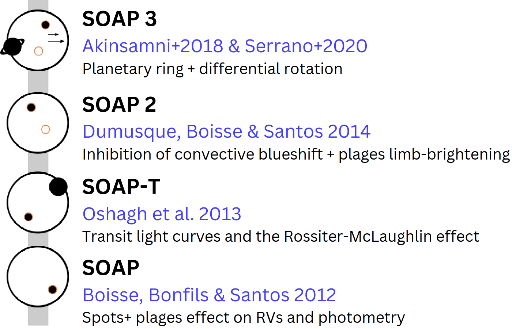

Welcome to SOAP's Documentation!
Introduction
SOAPv4 (Spot Oscillation And Planet) is an open-source Python package that simulates the impact of stellar activity and planetary transits on spectroscopic, radial velocity, and photometric data. Accurate modeling of stellar features like spots and faculae is essential for robust exoplanet characterization, particularly with high-resolution spectroscopy.
Initially built to reproduce the radial velocity effects of stellar spots, SOAP has broadened its scope across multiple versions. SOAPv4 now integrates a wide set of physical processes and observational configurations.
Novelty of SOAPv4
- Extends beyond cross-correlation functions (CCFs) by providing time-resolved stellar spectra.
- Incorporates complex stellar activity effects: active regions, differential rotation, convective blueshift, and additonal sources of center-to-limb variations;
- Unifies past developments into a comprehensive modeling framework;
- Enables combined modeling of spectra, transit signals, photometry, and stellar variability for exoplanet studies;
- In particular, for exoplanet transit studies, it computes planet-occulted line distortions (POLDs) and the Doppler shadow, accounting for both center-to-limb variations (CLVs) and stellar activity.
Some of the use cases of SOAP
SOAPv4 is especially suited for researchers who want to:
-
Compute time series of integrated stellar spectra
-
Assess stellar contamination in exoplanet transit spectra
-
Comput the photometric and radial velocity modulation of stellar activity
-
Model the signal of transiting planets for a wide range of stellar/planetary system parameters
-
Model transmission spectra (POLDs) and Doppler shadow in a simple way
-
...
Development of SOAP through Time
The SOAP code (Boisse et al. 2012) was initially developed to model the influence of stellar activity, particularly starspots, on radial velocity (RV) time series. In its first implementation, SOAP represented the local stellar disk spectrum using cross-correlation functions (CCFs), approximated by Gaussian profiles with user-defined parameters. For each stellar surface element, the corresponding CCF was Doppler-shifted according to the local rotational velocity under the assumption of solid-body rotation and flux-weighted following a prescribed limb-darkening law.
Active regions (ARs) were introduced as circular features, mapped to their correct latitude and longitude through spherical coordinates transformation. The same Gaussian CCF profile was applied to ARs, with their contribution scaled by a contrast parameter: values between 0 and 1 denoting dark spots, and greater than 1 representing bright faculae. Although simplified, this framework provided a first-order tool for characterizing stellar activity-induced distortions in photometric and RV measurements.
Building on this foundation, subsequent developments progressively extended SOAP’s functionality:
-
SOAP-T (Oshagh et al. 2013) incorporated transiting exoplanets. The code simulated the occultation of quiet stellar surface regions during transits by subtracting their flux contribution. This approach enabled the simultaneous modeling of photometric light curves, Keplerian orbital motion, and the Rossiter–McLaughlin effect, making SOAP-T a practical tool for studying the architecture of planetary systems.
-
SOAP 2.0 (Dumusque et al. 2014) increased the physical realism of the code through the introduction of solar observed spectra. High-resolution Fourier Transform Spectrograph (FTS) data from Kitt Peak, including a quiet-sun spectrum (Wallace et al. 1998) and a sunspot umbral spectrum (Wallace et al. 2005), were used to construct the CCFs to be used in the simulations. This allowed more accurate modeling of stellar line-profile deformations, particularly the suppression of convective blueshift within ARs. SOAP 2.0 also incorporated facular limb brightening and spot/facula contrasts derived from the Planck function as a function of temperature differences.
Although not all intermediate versions were released publicly, key developments further expanded the framework:
- Oshagh et al. (2016) combined SOAP-T and SOAP 2.0 elements to investigate how stellar activity biases measurements of planetary spin–orbit misalignments and transmission spectra of exoplanets (using the chromatic Rossiter-McLaughlin technique).
- Akinsanmi et al. (2018) added functionalities to simulate ringed planets and planetary rotational deformation, capturing their imprints on RVs and light curves during transits.
- Serrano et al. (2020) and Cristo et al. (2024) incorporated stellar differential rotation (e.g., Balona & Abedigamba 2016) and convective blueshift (Shporer & Brown 2011) effect during planetary transits.
In parallel, a dedicated branch emerged in the form of SOAP-GPU (Zhao & Dumusque 2023). This version diverged from SOAP 2.0 by directly producing stellar spectra rather than synthetic CCFs. Features included explicit AR mapping, more detailed treatments of convective blueshift variations across the disk based on empirical solar measurements (Löhner-Böttcher et al. 2019), and GPU-optimized performance.

Getting Started
SOAPv4 is publicly available on GitHub:
https://github.com/EduardoCristo/SOAP-Spot-Oscillation-And-Planet-code
For detailed installation and usage instructions, see the Install Guide.